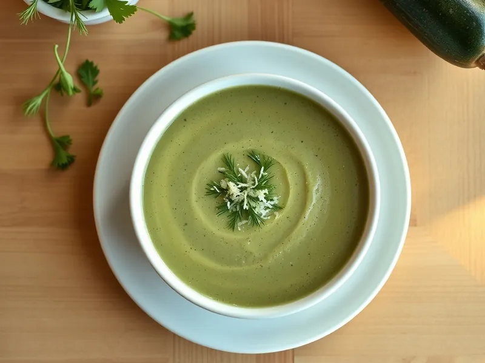

Фото: Иллюстрация ИИ, Cloudflare Workers AI
Крем-суп из кабачков
Лёгкий сливочный суп-пюре из молодых кабачков с чесноком и укропом
25 мин3 порц.199 ккал на порциюБ 4 · Ж 13 · У 17Русская кухня
Продукты на 3 порц.
- Кабачок2 шт
- Лук репчатый1 шт
- Морковь1 шт
- Чеснок1 зуб.
- Сливочное масло20 г
- Вода500 мл
- Бульонный кубик1 шт
- Сливки 20%100 мл
- Укроп10 г
- Сыр твёрдый по желаниюпо вкусу
Как готовить
- Нарежьте кабачки кубиками (молодые можно не чистить), лук и морковь мелко, чеснок раздавите ножом.
- Обжарьте лук и морковь на сливочном масле на среднем огне 5 минут до мягкости.
- Добавьте кабачки, чеснок, воду и бульонный кубик. Варите 10 минут после закипания, пока кабачок не станет прозрачным и мягким.
- Пробейте блендером до гладкости, влейте сливки и прогрейте на слабом огне 2 минуты.
- Разлейте по тарелкам, посыпьте укропом и при желании тёртым сыром.
Совет. Воды наливайте меньше, чем кажется: кабачки сами дают много сока. Если суп вышел жидким, проварите его без крышки ещё 3-4 минуты.